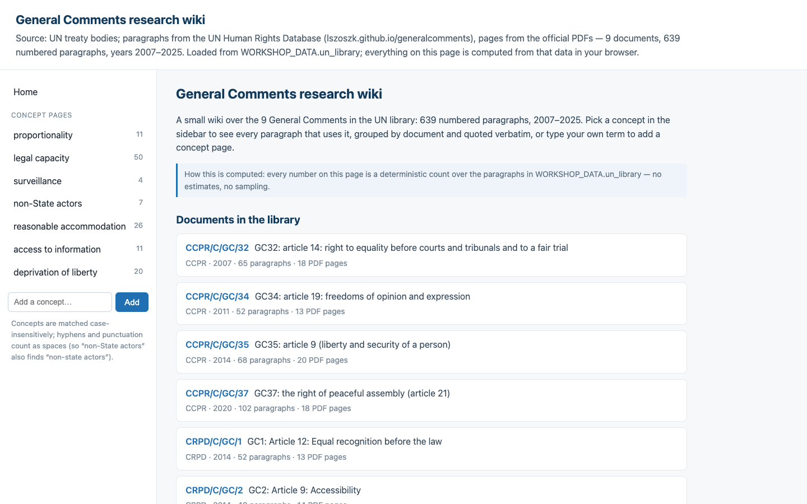
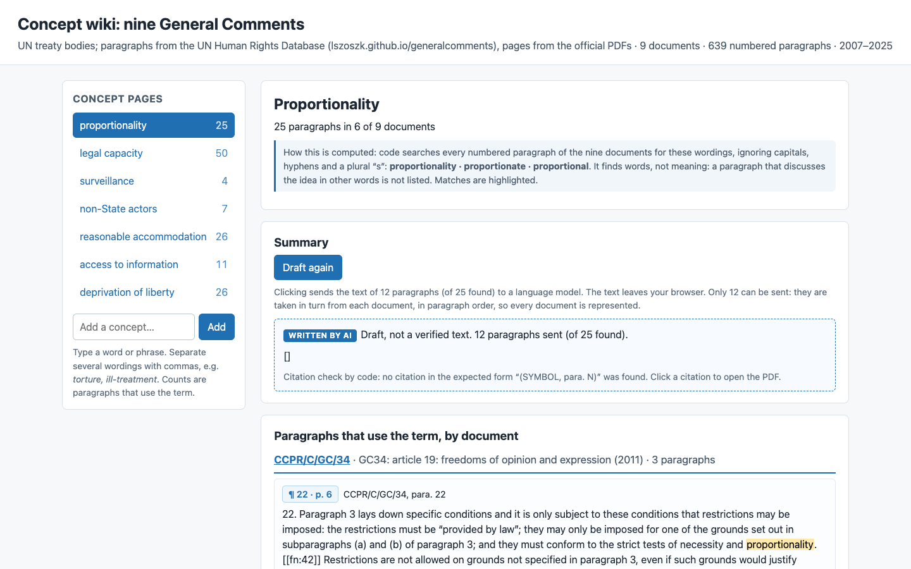

Run 2026-11-01T21-13-47-reasoning-high. Country: Kenya. Click a screenshot to open the app.
| Mistral Large 4 · France · Mistral (EU) | Claude Sonnet 5.5 · USA · Amazon Bedrock | |
|---|---|---|
| s8-5-wiki |  6/8 · 81.7 s · $0.038 · 352 lines calls_studio_ask, batches_max |  8/8 · 85.9 s · $0.171 · 391 lines all checks passed |